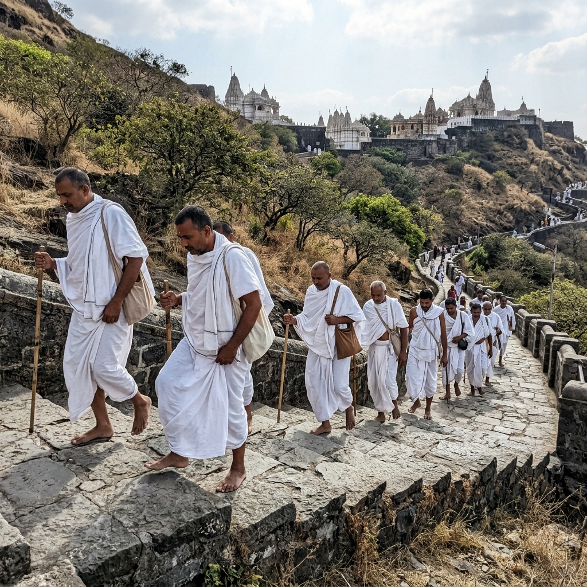

Sacred Journeys to the Heart of Jain Tirtha.
In Jain tradition, a yatra (pilgrimage) is a spiritual journey to holy sites — tirthas — where great souls achieved liberation. Walking these paths, we tread in the footsteps of the enlightened ones, accumulating punya (spiritual merit) for our soul's journey.
Many yatris observe Chovihar (complete fast without water after sunset) during the pilgrimage. This austere practice, often combined with Ekasana (one meal a day), purifies the body and sharpens spiritual focus during darshan.
The most revered is the Saat Kshetra Yatra — pilgrimage to the 7 holy Jain sites: Palitana, Girnar, Shatrunjay, Taranga, Abu, Kesariyaji, and Ranakpur. Completing this yatra is considered highly auspicious for moksha.
"When feet walk with devotion, the soul flies towards liberation."

Every yatra is a progressive spiritual journey. Follow the milestones of your transformation.
The spiritual intent to embark.
The mindful departure.
The divine vision.
The act of compassion.
The spiritual bliss.
Reserve your place in our upcoming spiritual pilgrimages and experience divine transformation.
A transformative 5-day spiritual pilgrimage to Palitana's sacred Shatrunjay Hill with daily pravachans and Chovihar vrat.
A complete spiritual experience rooted in Jain traditions
Daily spiritual discourses and devotional gatherings led by learned Acharyas and Sadhus.
Guided 48-minute meditation sessions for inner peace and spiritual reflection.
Daily evening ritual of self-reflection and seeking forgiveness — the heart of Jain practice.
Pure Jain vegetarian meals without root vegetables, prepared fresh with devotion daily.
Palki/Doli service for elderly yatris, with 24/7 medical support and first aid.
Connect with like-minded devotees, build lasting friendships, and join our WhatsApp community for updates.
Do you feel the pull of the holy Tirthas? Embark on a journey that transcends the physical and touches the infinite.
Select an interest